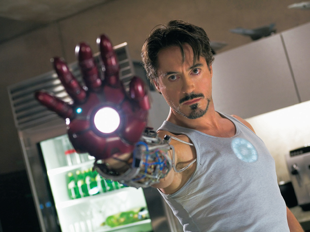
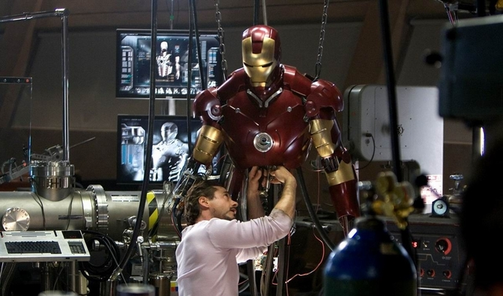

"Homem de Ferro" (2008) emergiu como um divisor de águas no Universo
Cinematográfico Marvel (MCU), inaugurando uma nova era para o gênero de
super-heróis no cinema. Reverenciado por sua audácia narrativa e ousadia
estética, o filme transcendeu as expectativas convencionais, oferecendo
uma abordagem visionária que desafiou as convenções estabelecidas. O
cerne da excelência de "Homem de Ferro" reside na maestria com que
fundiu elementos de ação espetacular com uma narrativa rica em
profundidade emocional e complexidade temática. A trajetória evolutiva
de Tony Stark, personificado com brilhantismo por Robert Downey Jr., não
é apenas uma jornada física rumo à armadura do herói, mas uma jornada
psicológica rumo à redenção e autoconhecimento.

Além disso, o filme é uma meditação penetrante sobre o poder e sua
responsabilidade, explorando questões éticas e morais intrincadas que
ecoam além da tela. A dualidade entre o industrialista carismático e o
vigilante enigmático encarna a luta universal entre a luz e as sombras
que reside em cada um de nós. A maestria técnica e visual de "Homem de
Ferro" é igualmente impressionante, com efeitos visuais deslumbrantes e
sequências de ação coreografadas com precisão cinematográfica. Cada
frame é meticulosamente elaborado, transmitindo uma sensação de
grandiosidade épica que eleva a experiência cinematográfica a novos
patamares de excelência.

No entanto, apesar de suas muitas virtudes, o filme não está isento de
críticas. Alguns observadores lamentam a caracterização superficial do
vilão, Obadiah Stane, cuja complexidade moral não está à altura da
profundidade de Stark. Além disso, o filme foi objeto de críticas por
sua falta de diversidade no elenco e na equipe de produção, uma falha
que revela as limitações da indústria cinematográfica em abraçar a
pluralidade de vozes e perspectivas. No entanto, no geral, "Homem de
Ferro" permanece como um monumento à excelência cinematográfica e uma
obra-prima do gênero de super-heróis. Sua influência perdura até hoje,
inspirando uma geração de cineastas e espectadores a desafiar as
fronteiras do possível e a explorar os recantos mais profundos da alma
humana através da lente do cinema.